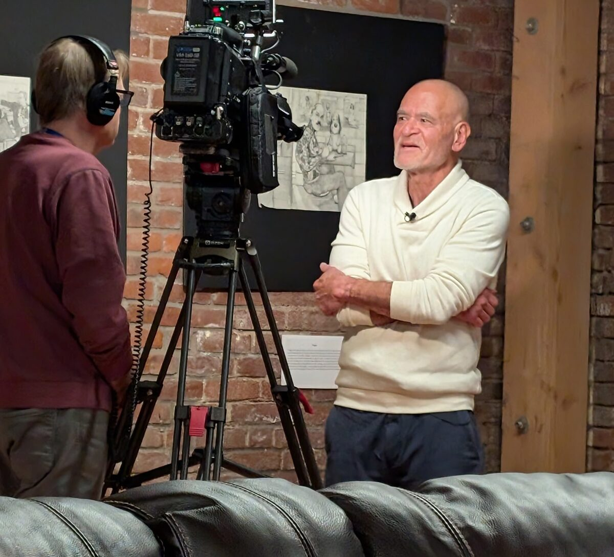
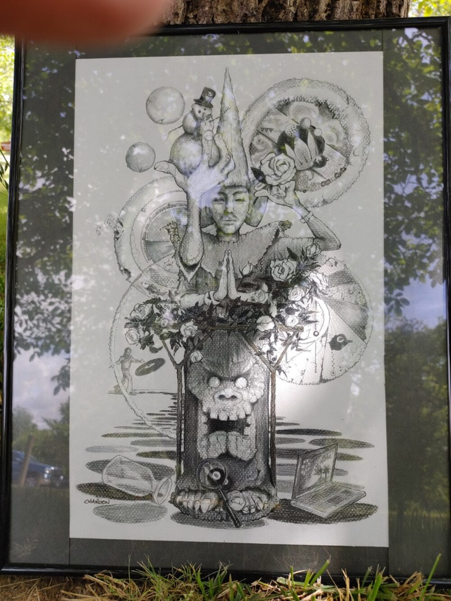
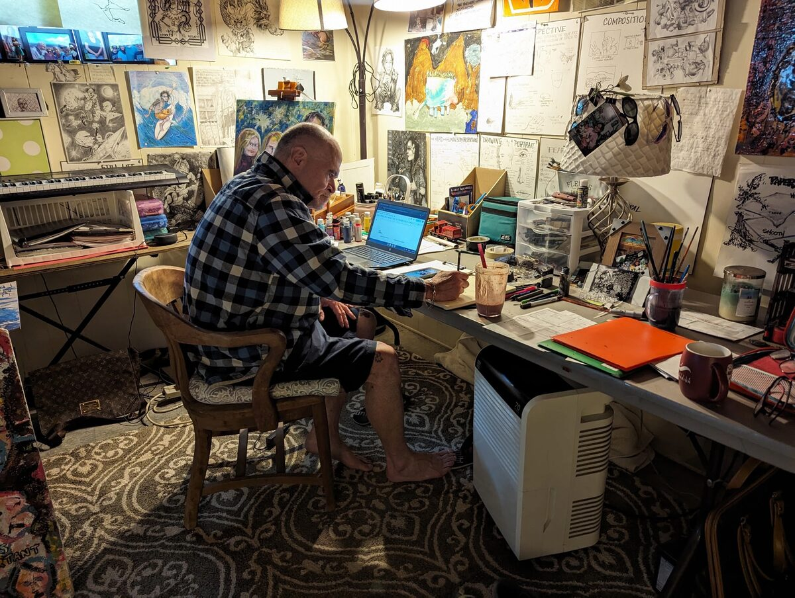
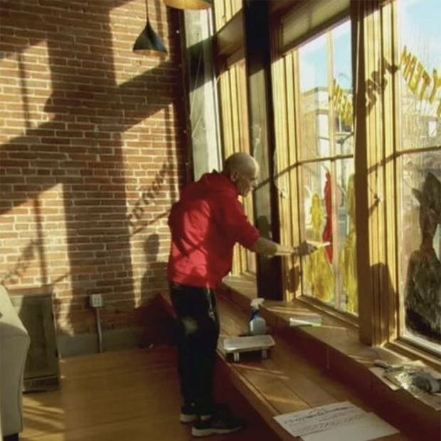

Media
People keep asking him to explain it.
Television, local press and a steady run of events. Kirk does the interviews himself, because the person who built the program is the person who can explain what it is for.




About the two rows without a link
Every link on this page was opened before it went up. Two appearances are
listed without one: the KOIN segment, whose page turns away automated
checks but opens normally in a browser, and the East Oregonian article,
which is no longer online. Both stay listed because they happened.